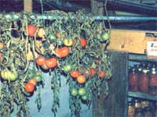

Most home gardens still have bushels of green tomatoes coming on when the first frosts of the season knock the tomato plants dead. That, however, didn't stop great-grandpa and great-grandma from enjoying fresh, homegrown "love apples" right up to Thanksgiving and beyond. And it needn't stop you either.
Just pull a few of your tomato plants up by the roots (or cut the stalks off at ground level) a few days before the first killing frost. Then hang 'em upside down in the fruit cellar (or anyplace that's dark and fairly cool without being cold). The fruit will continue to ripen on the vines throughout the fall and, if you're lucky, you'll still be eating fresh, homegrown tomatoes into the early days of December ... maybe even beyond.
Really experienced practitioners of this form of "root cellar gardening" also have another trick up their sleeves: They know that storing a few bushels of apples close to the upsidedown stalks will cause the tomatoes to ripen faster. (Ripening apples give off ethylene, a gas that can hasten the maturity of some other fruits and vegetables, including tomatoes.) Use the idea, or avoid it, as necessary to make your love apples table-ready just when you want to serve 'em up.
Nope. Not every tomato on every vine you save will finally wind up in the kitchen (some of the fruit simply will never get ripe). And, of course, nobody expected you to eat the stalks in the first place. So? So, throw the wilted tomato plants and all the fruit that doesn't make it to the table on the compost pile when you've finished with them ... and recycle 'em into next year's garden!
|
 |
|
|